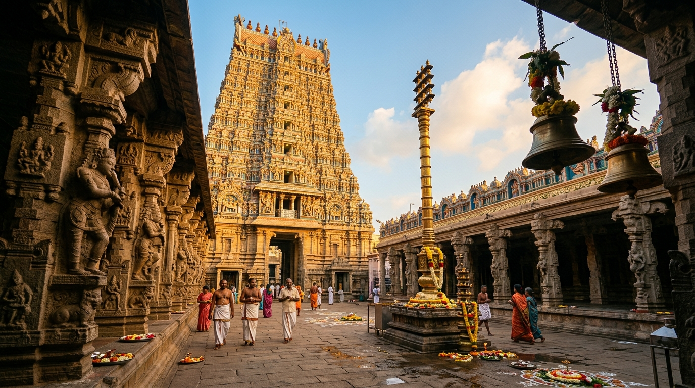
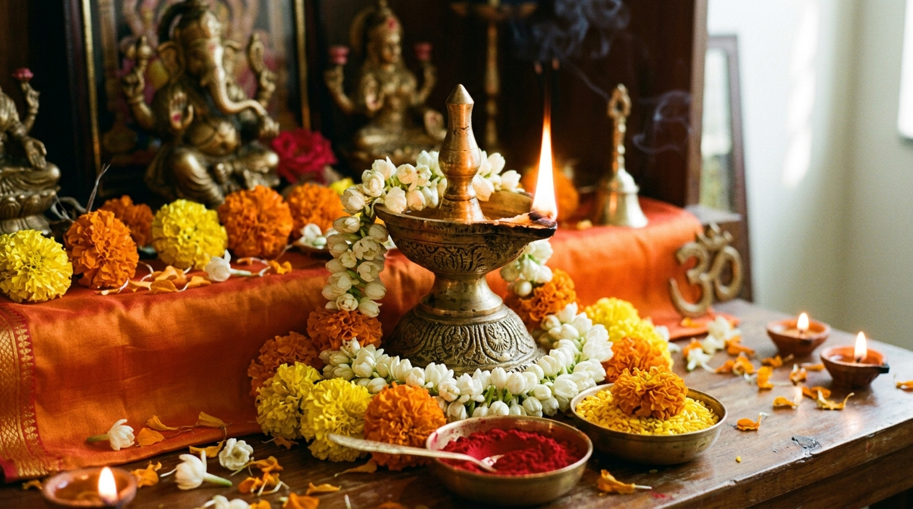
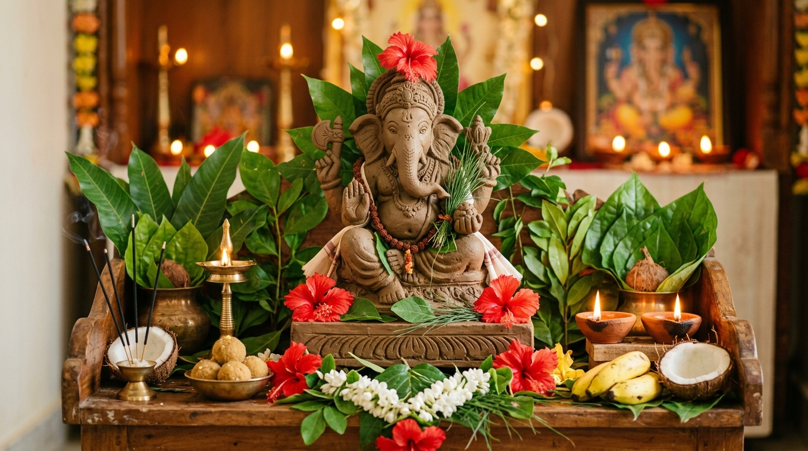
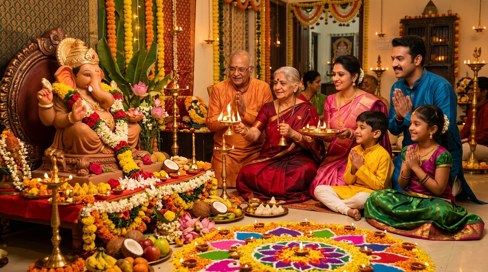

దేవాలయాల ప్రాముఖ్యత
దేవాలయాలు కేవలం పూజా స్థలాలు మాత్రమే కాదు; మానసిక ప్రశాంతతను, సానుకూల ఆధ్యాత్మిక తరంగాలను అందిస్తూ సమాజ ఐక్యతను నిలిపే పవిత్ర కేంద్రాలు.

Sri Lakshmi Ganapathi Utsava Committee – Gandhibomma Center, Velivennu
"శుక్లాంబరధరం విష్ణుం శశివర్ణం చతుర్భుజమ్ ।
ప్రసన్నవదనం ధ్యాయేత్ సర్వవిఘ్నోపశాంతయే ॥"
బాలగంగాధర తిలక్ మహాశయుని స్ఫూర్తితో 75 సంవత్సరాలుగా వేలివెన్ను గాంధీబొమ్మ సెంటర్ నందు నిరాటంకంగా నిర్వహించబడుతున్న మహోత్సవ విశేషాలు, దివ్య అలంకారాలు, స్వామివారి మహిమలు మరియు రథోత్సవ వైభవం.
1963 ప్రప్రథమ ఉత్సవం నుండి నేటి వరకు గాంధీబొమ్మ సెంటర్ నందు కొలువైన స్వామివారి దివ్యాలంకరణలు మరియు చారిత్రక ఉత్సవాల ఛాయాచిత్రాలు.
ఇంటి వద్ద భక్తిశ్రద్ధలతో శాస్త్రోక్తంగా వినాయక పూజ చేసుకునేందుకు అవసరమైన సంపూర్ణ పూజా సామగ్రి, ఆచమనం, సంకల్పం, 21 పత్రుల పూజ, అష్టోత్తర శతనామావళి, వినాయక దండకం మరియు సంపూర్ణ వ్రత కథ.
వినాయక పందిరి వద్ద ప్రతిరోజు జరిగే పూజా కార్యక్రమాలు
ఉత్సవాల సందర్భంగా స్వామివారి సన్నిధిలో ప్రతిరోజూ ఉదయం మరియు సాయంత్రం దివ్య పూజలు నిర్వహించబడును
ప్రతిరోజూ సుమారు ఉదయం 8:00 గంటలకు స్వామివారికి పంచామృతాభిషేకం, పవిత్ర తులసి-గరిక పుష్పార్చన మరియు తీర్థ ప్రసాద వితరణ జరుగును.
ప్రతిరోజూ సాయంత్రం 6:00 గంటలకు సర్వజన సమక్షంలో దీపారాధన, విశేష సంధ్యా హారతి, భజనలు మరియు భక్తులకు ప్రసాద నివేదన జరుగును.
భక్తులకు విజ్ఞప్తి: పూజా కార్యక్రమాలలో పాల్గొనదలచిన భక్తులు నిర్ణీత సమయానికి ముందుగా వినాయక పందిరి వద్దకు చేరుకోవాల్సిందిగా కోరుతున్నాము.
సనాతన సంప్రదాయాలు, వినాయక చవితి విశిష్టత మరియు ఆధ్యాత్మిక జ్ఞానం
"ధర్మో రక్షతి రక్షితః | సత్యమేవ జయతే నానృతం ||"
ధర్మాన్ని మనం రక్షిస్తే, ఆ ధర్మమే మనలను సర్వవేళలా కాపాడుతుంది. భారతీయ సనాతన సంస్కృతిలో పండుగలు కేవలం వేడుకలు మాత్రమే కావు; అవి సమాజంలో ఐక్యతను, భక్తిని మరియు ధార్మిక విలువలను పెంపొందించే దివ్య సాధనాలు.

హిందూ ధర్మందేవాలయాలు కేవలం పూజా స్థలాలు మాత్రమే కాదు; మానసిక ప్రశాంతతను, సానుకూల ఆధ్యాత్మిక తరంగాలను అందిస్తూ సమాజ ఐక్యతను నిలిపే పవిత్ర కేంద్రాలు.

పూజా సంప్రదాయాలుదీపం పరబ్రహ్మ స్వరూపం. అజ్ఞానమనే అంధకారాన్ని పారద్రోలి జ్ఞాన వెలుగును నింపే పవిత్ర సంప్రదాయం దీపారాధన. నిత్య దీపారాధన ద్వారా ఇంట్లో సకల దోషాలు నివారణమై శుభాలు కలుగుతాయి.

సనాతన సంప్రదాయాలువినాయకుని మట్టితో తయారుచేసి, ఔషధ గుణాలున్న 21 పత్రులతో పూజించి తిరిగి జలంలో నిమజ్జనం చేయడం ద్వారా సృష్టి, స్థితి, లయల ప్రకృతి ధర్మాన్ని మనం గౌరవిస్తాము.

హిందూ సంస్కృతి"వసుధైవ కుటుంబకం" - ప్రపంచమంతా ఒకే కుటుంబం అనే సత్యం, ధర్మం, శాంతి, సేవా భావాలను మన సనాతన సంస్కృతి తరతరాలుగా బోధిస్తోంది.
గజముఖం అపారమైన జ్ఞానానికి, ఆలోచనా శక్తికి మరియు వివేకానికి చిహ్నం. పెద్ద చెవులు మంచి మాటలను ఆలకించమని సూచిస్తాయి.
మట్టి గణపతి పూజ మరియు 21 రకాల ఔషధ గుణాలున్న పత్రాలతో అర్చన ప్రకృతిని పూజించాలనే పర్యావరణ సందేశాన్ని ఇస్తాయి.
వినాయక చవితి ఉత్సవాలు కులమతాల కతీతంగా వీధి వీధినా పందిళ్ళు వేసి అందరినీ ఒకే వేదికపై కలిపే సామాజిక మహోత్సవం.